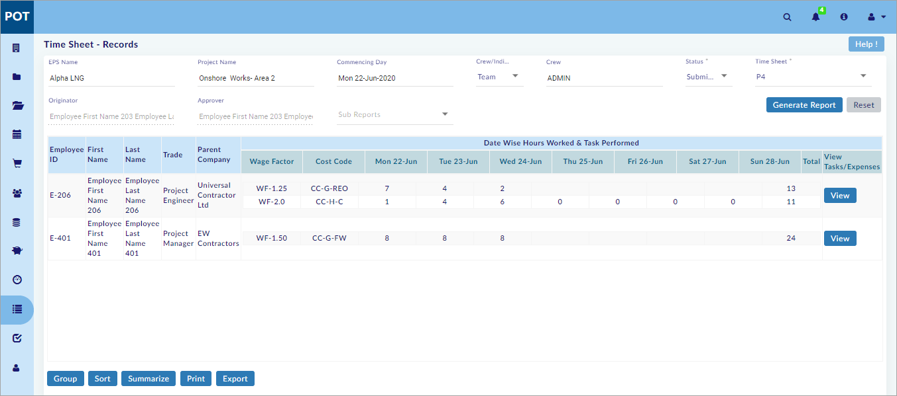
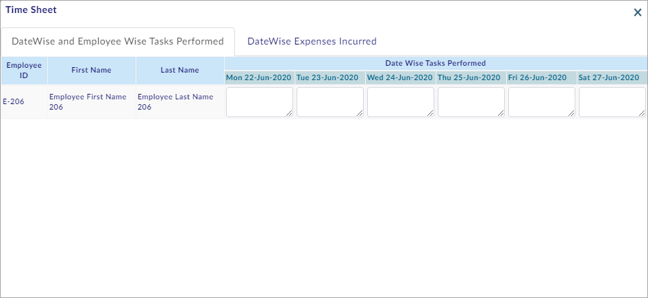
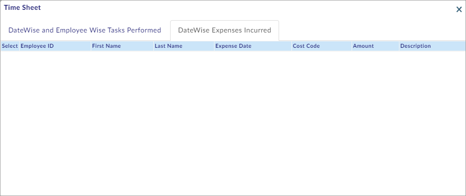
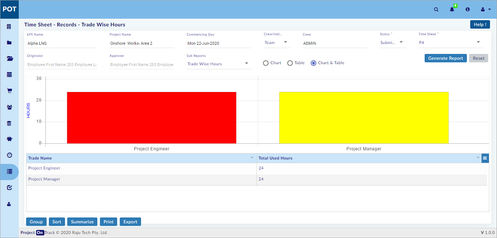
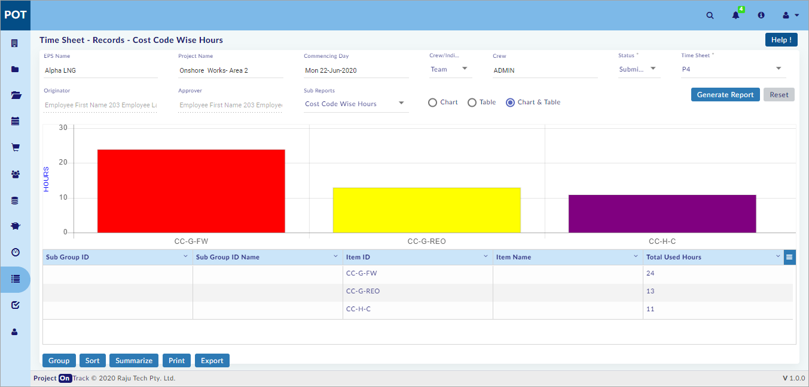
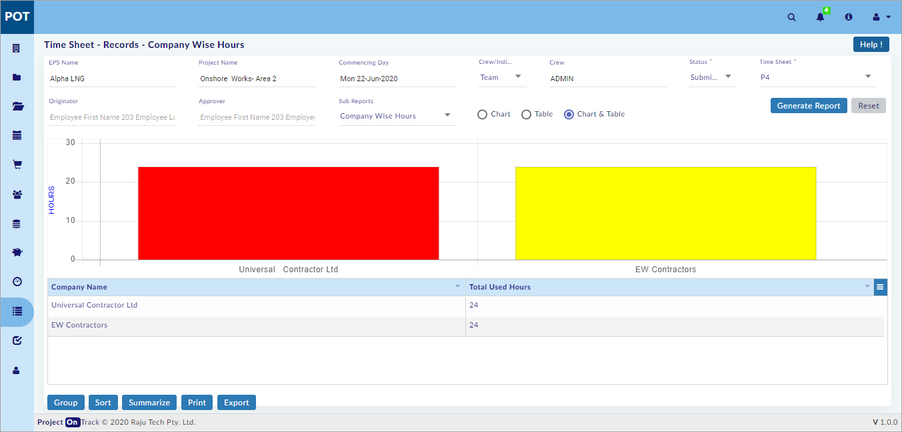

Time Sheet - Records
You can perform the following in the Time Sheet - Records Section:
- Generate and View the Time Sheet Report
- View the Trade Wise Hours Sub Report
- View the Cost Code Wise Hours Sub Report
- View the Company Wise Hours Sub Report
Generate and View Time Sheet Report:
This section helps you to Generate and View the Time Sheet Report.
To Generate and View the Time Sheet Report, do the following.
- Select EPS Name or Project Name, and then select Commencing Day.
- Select Crew/Individual.
- Select Crew or Individual (based on the option selected in step 2; double-click to select).
- Select Status, and then select Time Sheet (Originator and Approver are auto filled).
- Click
 and the report opens as shown in the figure.
and the report opens as shown in the figure.

- Click and the Time Sheet window opens as shown in the figure.

- On the Time Sheet window, Select DateWise Expenses Incurred tab.
- The DateWise Expenses Incurred tab opens as shown in the figure.

You have successfully Generated and Viewed the Time Sheet Report.
View Trade Wise Hours Sub Report:
This section helps you to View the Trade Wise Hours Sub Report.
To View the Trade Wise Hours Sub Report, do the following.
- Perform steps 1 - 5 of Generate and View Time Sheet Report Section (See the Generate and View Time Sheet Report Section above).
- Select Trade Wise Hours from the Sub Reports drop-down menu and the Time Sheet - Records - Trade Wise Hours page opens as shown in the figure.

Note:
- Select Chart to view the chart only.
- Select Table to view the table only.
- Select Chart & Table to view both the chart and table.
- Click the required colour code(s) to toggle between hiding and showing code(s) shown in the chart.
- Right-click on the chart for more chart options.
- Operations can be performed on the table, similar to those performed on steps 7 - 10 of Generate and View Daily Employee Attendance Report Section in Daily Employee Records sub-module. (See Reports > Attendance Records > Daily Employee Records).
You have successfully Viewed the Trade Wise Hours Sub Report.
View Cost Code Wise Hours Sub Report:
This section helps you to View the Cost Code Wise Hours Sub Report.
To View the Cost Code Wise Hours Sub Report, do the following.
- Perform steps 1 - 5 of Generate and View Time Sheet Report Section (See the Generate and View Time Sheet Report Section above).
- Select Cost Code Wise Hours from the Sub Reports drop-down menu and the Time Sheet - Records - Cost Code Wise Hours page opens as shown in the figure.

Note:
- Select Chart to view the chart only.
- Select Table to view the table only.
- Select Chart & Table to view both the chart and table.
- Click the required colour code(s) to toggle between hiding and showing code(s) shown in the chart.
- Right-click on the chart for more chart options.
- Operations can be performed on the table, similar to those performed on steps 7 - 10 of Generate and View Daily Employee Attendance Report Section in Daily Employee Records sub-module. (See Reports > Attendance Records > Daily Employee Records).
You have successfully Viewed the Cost Code Wise Hours Sub Report.
View Company Wise Hours Sub Report:
This section helps you to View the Company Wise Hours Sub Report.
To View the Company Wise Hours Sub Report, do the following.
- Perform steps 1 - 5 of Generate and View Time Sheet Report Section (See the Generate and View Time Sheet Report Section above).
- Select Company Wise Hours from the Sub Reports drop-down menu and the Time Sheet - Records - Company Wise Hours page opens as shown in the figure.

Note:
- Select Chart to view the chart only.
- Select Table to view the table only.
- Select Chart & Table to view both the chart and table.
- Click the required colour code(s) to toggle between hiding and showing code(s) shown in the chart.
- Right-click on the chart for more chart options.
- Operations can be performed on the table, similar to those performed on steps 7 - 10 of Generate and View Daily Employee Attendance Report Section in Daily Employee Records sub-module. (See Reports > Attendance Records > Daily Employee Records).
You have successfully Viewed the Company Wise Hours Sub Report.